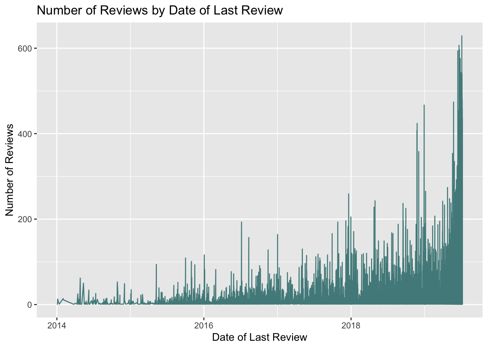
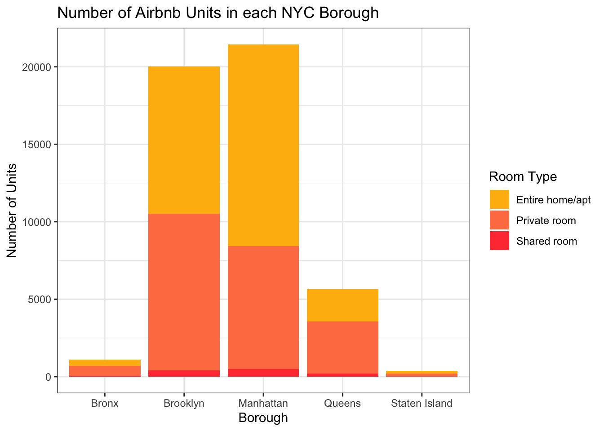

library(tidyverse)
library(ggplot2)
library(treemap)
library(treemapify)
knitr::opts_chunk$set(echo = TRUE, warning=FALSE, message=FALSE)Challenge 6: Airbnb in NYC
challenge_6
Justine Shakespeare
air_bnb
Visualizing Time and Relationships
Load the Data
Let’s look at the Airbnb data from New York again.
Airbnb_NYC <- read_csv("_data/AB_NYC_2019.csv")
glimpse(Airbnb_NYC)Rows: 48,895
Columns: 16
$ id <dbl> 2539, 2595, 3647, 3831, 5022, 5099, 512…
$ name <chr> "Clean & quiet apt home by the park", "…
$ host_id <dbl> 2787, 2845, 4632, 4869, 7192, 7322, 735…
$ host_name <chr> "John", "Jennifer", "Elisabeth", "LisaR…
$ neighbourhood_group <chr> "Brooklyn", "Manhattan", "Manhattan", "…
$ neighbourhood <chr> "Kensington", "Midtown", "Harlem", "Cli…
$ latitude <dbl> 40.64749, 40.75362, 40.80902, 40.68514,…
$ longitude <dbl> -73.97237, -73.98377, -73.94190, -73.95…
$ room_type <chr> "Private room", "Entire home/apt", "Pri…
$ price <dbl> 149, 225, 150, 89, 80, 200, 60, 79, 79,…
$ minimum_nights <dbl> 1, 1, 3, 1, 10, 3, 45, 2, 2, 1, 5, 2, 4…
$ number_of_reviews <dbl> 9, 45, 0, 270, 9, 74, 49, 430, 118, 160…
$ last_review <date> 2018-10-19, 2019-05-21, NA, 2019-07-05…
$ reviews_per_month <dbl> 0.21, 0.38, NA, 4.64, 0.10, 0.59, 0.40,…
$ calculated_host_listings_count <dbl> 6, 2, 1, 1, 1, 1, 1, 1, 1, 4, 1, 1, 3, …
$ availability_365 <dbl> 365, 355, 365, 194, 0, 129, 0, 220, 0, …Data Description
This data looks to be Airbnb rentals in New York City in 2019, with each observation representing one rental unit. There are almost 49,000 observations and 16 variables. The variables provide information about each unit, including: the id and name of the unit, the hosts (id and name of the host) the location (including neighborhood, city borough, and longitude and latitude), the room type, the price, the number of minimum nights required for a reservation, the number of reviews, date of last review, average reviews per month, something called a “calculated_host_listings_count” (possibly a count of how many listings the host has with Airbnb) and availability (I’m guessing this is how many days of the year the unit is available).
This data looks pretty tidy already. The only thing we’ll likely want to do is focus on a subset of the data, since we discovered furing challenge #5 that there are some outliers in the data. As a reminder, let’s look at the spread of the price variable. The first time I did this it showed $0 as the lowest price. Given that these are likely some sort of error or at least don’t represent live listings, let’s filter those units out so they don’t skew the quantiles.
Airbnb_NYC %>%
filter(price != 0) %>%
summarize("lowest" = min(price, na.rm = TRUE),
"25th quantile" = quantile(price, probs = .25),
"median" = median(price, na.rm = TRUE),
"75th quantile" = quantile(price, probs = .75),
"99 quantile" = quantile(price, .99),
"highest" = max(price, na.rm = TRUE))# A tibble: 1 × 6
lowest `25th quantile` median `75th quantile` `99 quantile` highest
<dbl> <dbl> <dbl> <dbl> <dbl> <dbl>
1 10 69 106 175 799 10000Even with the $0 priced units removed, it’s still the case that the price in the 99th percentile is $799. For that reason I think it’s safe to just focus on prices below $1,000. We know that we’re still looking at over 99% of the data.
Let’s filter for just prices under $1,000 and then take another look at the data that remains.
ABNYC_filtered <- Airbnb_NYC %>%
filter(price != 0 & price < 1000)
ABNYC_filtered %>%
summarize("lowest" = min(price, na.rm = TRUE),
"25th quantile" = quantile(price, probs = .25),
"median" = median(price, na.rm = TRUE),
"75th quantile" = quantile(price, probs = .75),
"99 quantile" = quantile(price, .99),
"highest" = max(price, na.rm = TRUE))# A tibble: 1 × 6
lowest `25th quantile` median `75th quantile` `99 quantile` highest
<dbl> <dbl> <dbl> <dbl> <dbl> <dbl>
1 10 69 105 175 600 999Since we’ll be focusing on time series visualizations, let’s make sure the last_review variable is a date.
ABNYC_filtered$last_review <- as.Date(ABNYC_filtered$last_review)
glimpse(ABNYC_filtered)Rows: 48,586
Columns: 16
$ id <dbl> 2539, 2595, 3647, 3831, 5022, 5099, 512…
$ name <chr> "Clean & quiet apt home by the park", "…
$ host_id <dbl> 2787, 2845, 4632, 4869, 7192, 7322, 735…
$ host_name <chr> "John", "Jennifer", "Elisabeth", "LisaR…
$ neighbourhood_group <chr> "Brooklyn", "Manhattan", "Manhattan", "…
$ neighbourhood <chr> "Kensington", "Midtown", "Harlem", "Cli…
$ latitude <dbl> 40.64749, 40.75362, 40.80902, 40.68514,…
$ longitude <dbl> -73.97237, -73.98377, -73.94190, -73.95…
$ room_type <chr> "Private room", "Entire home/apt", "Pri…
$ price <dbl> 149, 225, 150, 89, 80, 200, 60, 79, 79,…
$ minimum_nights <dbl> 1, 1, 3, 1, 10, 3, 45, 2, 2, 1, 5, 2, 4…
$ number_of_reviews <dbl> 9, 45, 0, 270, 9, 74, 49, 430, 118, 160…
$ last_review <date> 2018-10-19, 2019-05-21, NA, 2019-07-05…
$ reviews_per_month <dbl> 0.21, 0.38, NA, 4.64, 0.10, 0.59, 0.40,…
$ calculated_host_listings_count <dbl> 6, 2, 1, 1, 1, 1, 1, 1, 1, 4, 1, 1, 3, …
$ availability_365 <dbl> 365, 355, 365, 194, 0, 129, 0, 220, 0, …Time Dependent Visualization
Let’s take a look at a histogram of the date of the last review to get a sense of the distribution of this data.
ggplot(ABNYC_filtered, aes(last_review)) +
geom_histogram(fill = "cornflowerblue") + labs(title = "Last Review Date",
x = "Date of Last Review", y = "Count of Reviews")
It looks like most of the units in this dataset were last reviewed in 2019 (the most recent year in the dataset). There look to be a few units that were last reviewed as early as 2012. Let’s try plotting the last_review variable alongside the number_of_reviews variable with geom_line(). We’ll filter so that we’re just looking at data after 2014.
ABNYC_filtered %>%
filter(as.Date(last_review) > as.Date("2014-01-01")) %>%
ggplot(aes(last_review, number_of_reviews)) +
geom_line(color = "darkslategray4") +
labs(title = "Number of Reviews by Date of Last Review",
x = "Date of Last Review", y = "Number of Reviews")
This graph shows a similar trend to the graph above - there are more reviews in more recent years.
Is there a relationship between type of room and the number and date of last reviews?
ABNYC_filtered %>%
filter(as.Date(last_review) > as.Date("2014-01-01")) %>%
ggplot(aes(last_review, number_of_reviews)) +
geom_point(color = "brown1") +
labs(title = "Number of Reviews by Date of Last Review",
x = "Date of Last Review", y = "Number of Reviews") +
theme_bw() + facet_wrap(vars(room_type))
There look to be less reviews of shared rooms than entire home/apartments or private rooms, but this likely reflects the fact that there are less shared rooms in the data.
Visualizing Part-Whole Relationships
Let’s try making a treemap that shows the number of Airbnb units by NYC borough:
ABNYC_filtered %>%
count(neighbourhood_group) %>%
ggplot(aes(area= n, fill= neighbourhood_group, label = neighbourhood_group)) +
geom_treemap() +
labs(title = "Treemap of Airbnb Units by NYC Borough") +
scale_fill_discrete(name = "Borough") +
geom_treemap_text(colour = "darkslategray",
place = "centre")
I’d like to create subgroups here with the relevant neighborhoods within each borough, but I’m not sure how to do that…
Let’s use geom_bar() to look at the number of Airbnb units by borough and room type.
colors <- c("darkgoldenrod1", "coral", "brown1")
ggplot(ABNYC_filtered, aes(neighbourhood_group, fill = room_type)) +
geom_bar(stat = "count") +
labs(title = "Number of Airbnb Units in each NYC Borough",
x = "Borough",
y = "Number of Units") +
scale_fill_manual(name = "Room Type", values = colors) +
theme_bw()
This chart gives us a sense of the overall number of units in each borough (we can see the most are in Manhattan and Brooklyn), and of those, the proportion of different room types (very few are shared rooms).
Finally, another attempt at the map (thanks Erico and Sue-Ellen for the idea and original code!).
ggplot(Airbnb_NYC, aes(longitude, latitude, color = neighbourhood_group),
group = neighbourhood_group) + geom_point() +
labs(title = "Airbnb Listings in NYC by Borough", color = "Borough")